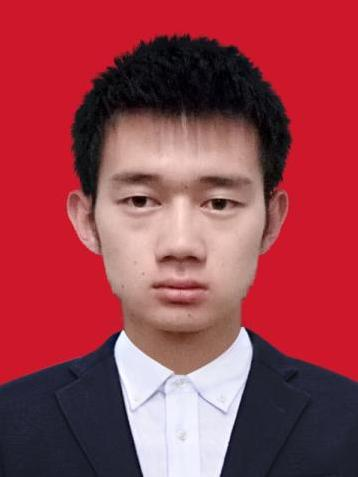
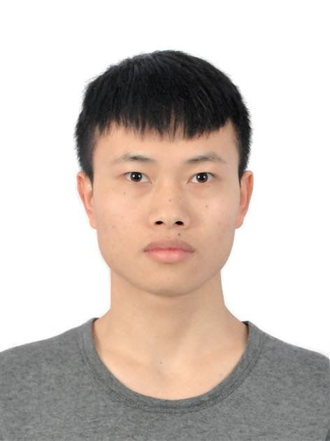

Nonlinear Analysis and Optimal Control Theory
Faculty
 |
Prof. Songxiao Li (李颂孝) |
 |
Prof. Xiaolong Qin (秦小龙) |
Current Member(s)
 |
Bing Tan (谭兵) |
 |
Lian Hu (胡练) |
 |
Rong Yang (杨蓉) |
 |
Shanshan Xu (许珊珊) |
|  | Jiayin Chen (陈家印) |
|  | Xianzhao Rui (税显钊) |
Yangyang Song (宋佯佯) |
Yuhan Liu (刘玉涵)
M.Sc., University of Electronic Science and Technology of China, China, Sep. 2022–Present
Graduated Members
 |
Liya Liu (刘丽亚) |
 |
Jingjing Fan (樊菁菁) |
 |
Yinglin Luo (罗英林) |
 |
Zheng Zhou (周正) |
 |
Kai Jiang (蒋凯) |